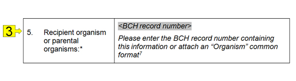
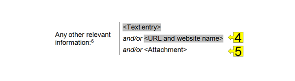
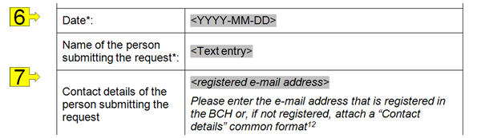
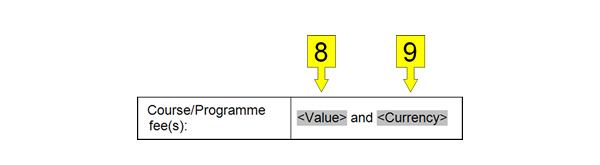
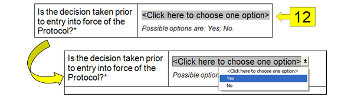
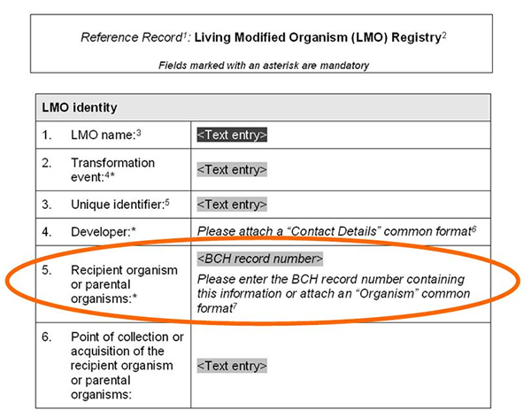
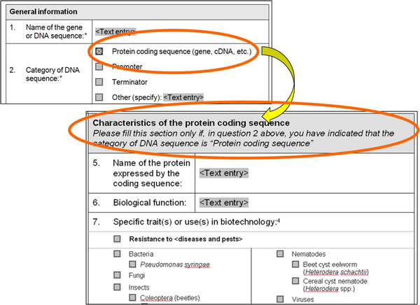

Offline Common Formats are standard forms, made available on the BCH in MS Word format for download, to assist users in gathering and organizing information prior to submission. They are offline copies of the online registration forms. The forms contain several different fields in which to enter information. As in the online Common Formats, there are fields which are mandatory and must be completed before the record can be published. Also, there are fields in which different kinds of information are required (text, numbers, dates) and entering the wrong type of information (e.g. adding text in a number-only field) will block the publishing of the record.
The following list describes the kinds of fields that can be found on the forms.

Figure 44
-
Checkboxes: Select the options that correspond from the list.
-
Text entry: Enter free text.

Figure 45
-
Reference to another record: As in online registration forms, some fields may contain a reference to another record. In this case a “BCH record number” is entered; that is, the number that the referenced record was assigned in the BCH. Sometimes the record to be referenced does not yet exist. In these cases you may wish to create the record to be referenced using the appropriate offline Common Format and attach it.
Figure 46
-
URL and website name: Provide the name and internet address of a website.
-
Attachment: Attach a document to the offline Common Format.

Figure 47
-
Date: Enter a valid date using the specified date format. For example, if the specified date format is ‘YYYY-MM-DD”, then the date “20-jan-2010” must be entered as “2010-01-20”.
-
Registered email address: Enter an email address that was registered in the BCH to identify the referenced person.

Figure 48
-
Value: Enter a numeric valued.
-
Currency: Enter a currency.

Figure 49
-
Country Name: Enter a valid country name.
-
Language: Enter a language of a valid language code.

Figure 50
-
Dropdown list: A list of options is displayed when clicking on the field. Select one of the options.
When completing the offline Common Formats, references to other BCH documents may be provided by entering the BCH record number of the referenced record. When a reference to a new record is required, a Common Format containing the requested information must be attached.

Figure 51

Figure 52